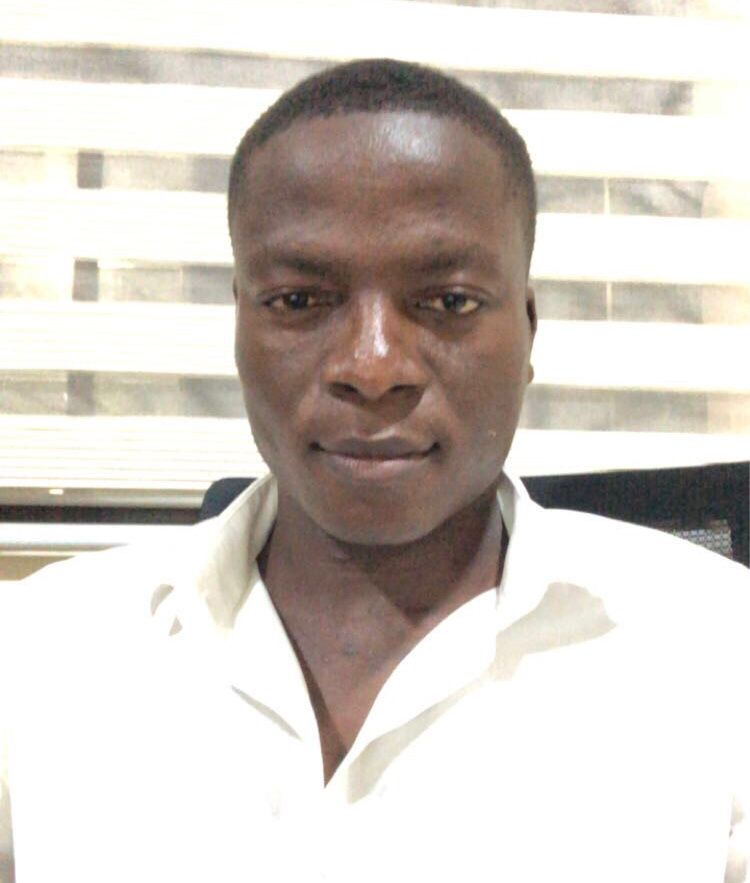

Dekportor Ivan | WDD 130
Hey there I am Ivan from Ghana ,Accra. I am a member of the church of jesus christ of the latter days saints tesano ward. I am very excited to learn Web development and feed my passion for the internet as a whole. My aim is to be one of the best in this field and I am willing learn more and acquire more skills related to the field. Let the journey begin. Embarking on my first web development project was both exciting and nerve-wracking. I had spent weeks learning the basics of HTML, CSS, and JavaScript, and now it was time to put those skills into action. My project was a simple personal portfolio website—a digital space to showcase my journey into web development. Starting with HTML, I built the structure: a navigation bar, a header with my name, and sections for my bio, projects, and contact details. Styling the page with CSS was where the magic happened. I experimented with colors, fonts, and layouts, finally settling on a clean and modern design. Adding JavaScript brought interactivity, like a responsive navigation menu and a form validation feature. The process wasn't without challenges—debugging errors and ensuring the site looked good on different devices pushed me to problem-solve creatively. Completing the project was a proud moment, solidifying my passion for web development!